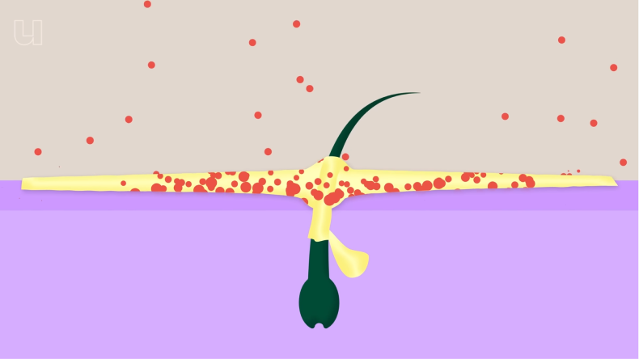
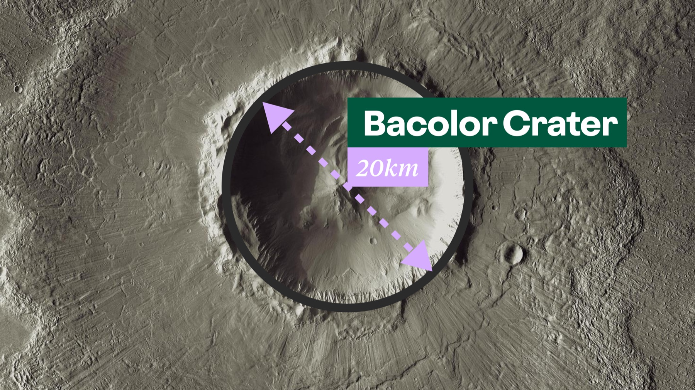
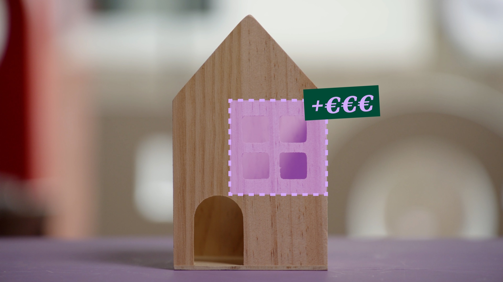
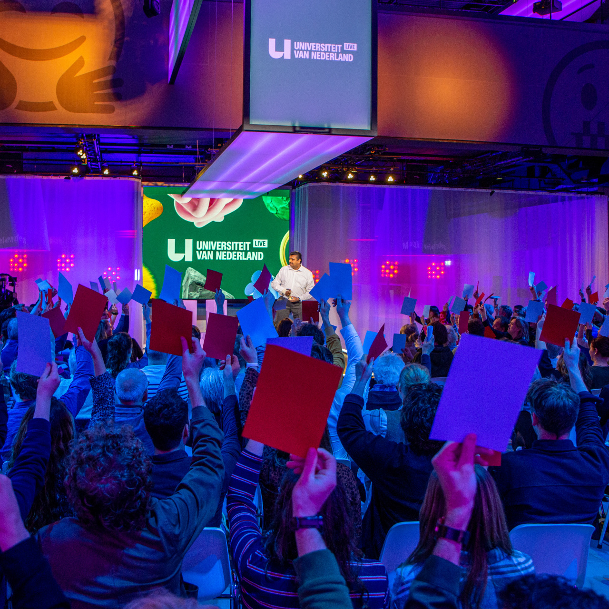
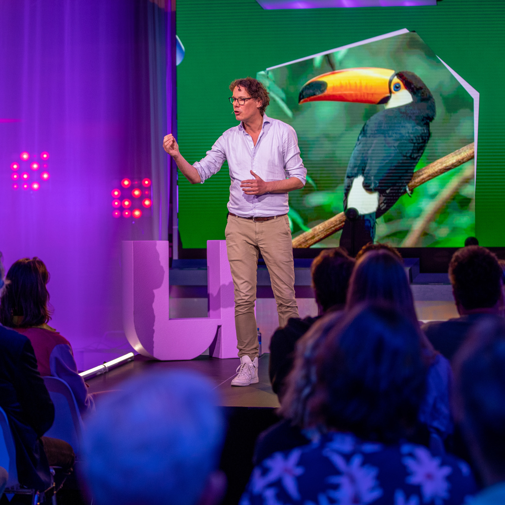
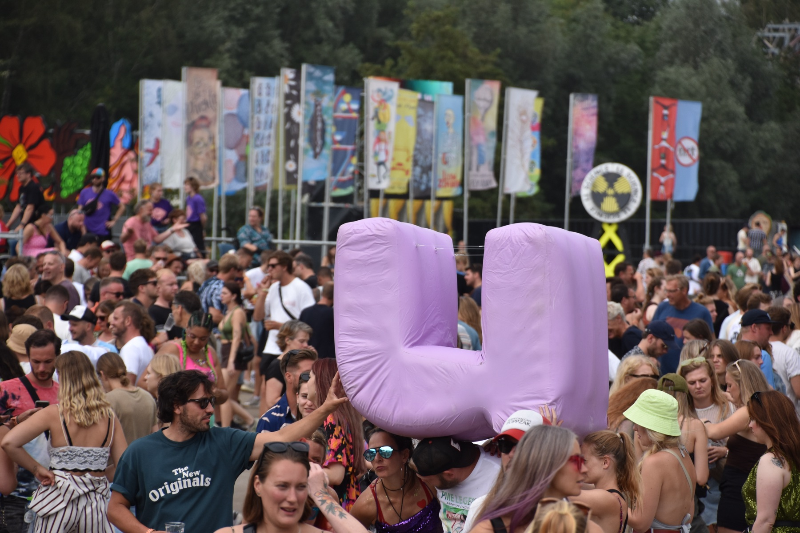
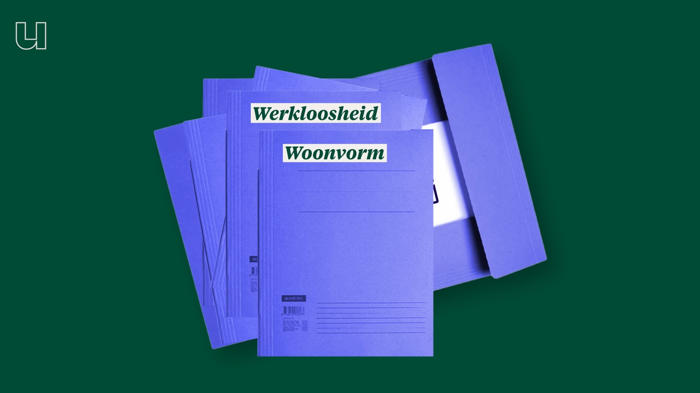
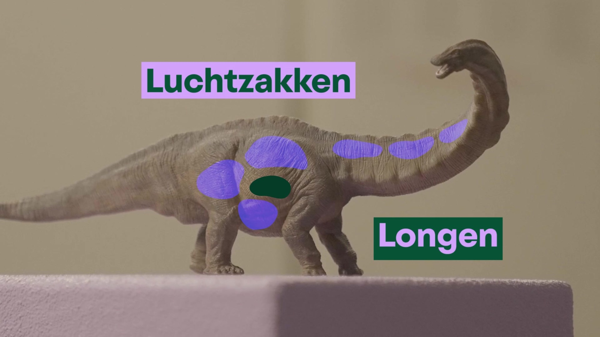
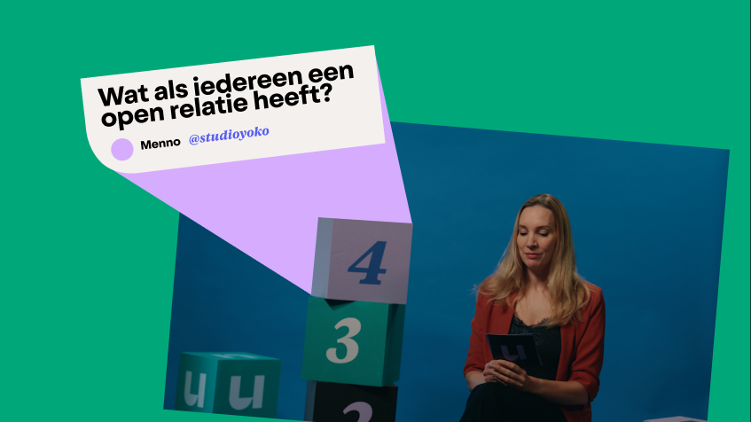

Wetenschap voor iedereen
Al meer dan tien jaar zijn we de vaste visuele partner van Universiteit van Nederland en Vlaanderen.
In die tijd groeide onze rol mee met het platform. We maken niet alleen animaties bij afzonderlijke verhalen, maar denken samen met de redactie na over formats, de visuele identiteit, live events en de middelen waarmee het team dagelijks zelf kan werken.
Een greep uit tien jaar werk


De uitdaging
Universiteit van Nederland publiceert het hele jaar door verhalen over onderwerpen die inhoudelijk nauwelijks verder uit elkaar kunnen liggen. Van slaap en klimaat tot geschiedenis, gezondheid en technologie. Ieder onderwerp vraagt om een andere uitleg, terwijl de afzender steeds direct herkenbaar moet blijven.
Wetenschappelijke inhoud laat zich bovendien niet terugbrengen tot een paar aantrekkelijke plaatjes. Beeld moet helpen om iets werkelijk te begrijpen, zonder belangrijke nuance weg te poetsen. Tegelijk moet de redactie in hoog tempo kunnen publiceren voor verschillende kanalen en formaten.
De uitdaging is dus tweeledig: ieder verhaal de vorm geven die het nodig heeft én zorgen dat al die verschillende verhalen samen één helder en herkenbaar merk vormen.




Ons inzicht
Goede wetenschapscommunicatie begint niet bij vormgeven, maar bij begrijpen. Daarom sluiten we vroeg aan bij de redactie. We lezen mee, stellen vragen en zoeken samen uit wat de kijker na afloop echt moet hebben begrepen.
Pas daarna bepalen we wat beeld moet doen. Soms maakt een eenvoudige grafiek een redenering helder. Soms werkt een visuele metafoor beter, is een animatie nodig om een onzichtbaar proces te laten zien of vraagt een onderwerp om een compleet nieuw format. En soms is minder beeld juist de beste keuze.
Doordat we zowel bij de inhoud als bij de dagelijkse productie betrokken zijn, zien we ook wanneer een terugkerend probleem groter is dan één video. Dan zoeken we naar een werkwijze waar de redactie structureel mee verder kan.


Onze keuze
We behandelen onze rol daarom als een doorlopende samenwerking, niet als een reeks losse opdrachten. Samen met de redactie en Ronny van Allthis ontwikkelden we een benaderbare, kleurrijke visuele identiteit met ruimte voor humor. Sindsdien bewaken én ontwikkelen we die identiteit verder terwijl het platform blijft groeien.
Dat betekent dat we al aanschuiven wanneer een verhaal of format nog op papier staat. We denken mee over de inhoudelijke opbouw, bepalen waar beeld uitleg kan overnemen en vertalen dat vervolgens naar art direction, set, camerataal, grafische vormgeving en animatie.
Voor terugkerend werk leggen we heldere visuele principes vast, zodat nieuwe uitingen herkenbaar zijn zonder allemaal hetzelfde te worden. En wanneer dezelfde handeling steeds terugkomt, maken we liever een template, workflow of tool waarmee de redactie zelfstandig en sneller kan werken.

Wat we maken
Onze samenwerking loopt van de visuele uitleg bij één ingewikkeld onderzoek tot de ontwikkeling van een compleet format of systeem. Wekelijks maken we explaineranimaties, grafieken en illustraties die abstracte of onzichtbare processen begrijpelijk maken. Niet als versiering achteraf, maar als onderdeel van de uitleg.
Bij nieuwe formats denken we vanaf het eerste idee mee over de vorm waarin een verhaal het beste werkt. Voor het vraag-en-antwoordformat HEY U! vertaalden we dat bijvoorbeeld naar art direction, setontwerp, camerahoeken, kleur, typografie, graphics en animatie. Zo kreeg het format een eigen gezicht dat nog steeds onmiskenbaar bij Universiteit van Nederland hoort.
Ook buiten video trekken we de identiteit consequent door. Voor live events in onder meer Carré, ARTIS en op Lowlands maakten we de visuele lijn van aankondiging en publiekscommunicatie tot podium, schermcontent en visuals in de zaal. Voor publicaties werkten we onder andere aan het boek DROOM en de Rare Jongens-cover voor Quest.
Daarnaast ontwikkelen we websites, templates, workflows en software.

Explaineranimaties
Huisstijl

Live events



Boekcovers


Websites & templates ↗


De universiteit voor iedereen
Universiteit van Nederland wil wetenschap toegankelijk maken zonder de inhoud plat te slaan. Vanuit dat idee ontwikkelden we een visuele identiteit die kennis niet afstandelijk maakt, maar menselijk, helder en uitnodigend.
De stijl combineert een herkenbaar woord- en beeldmerk met een uitgesproken kleurenpalet, royale typografie en eenvoudige 2D- en 3D-vormen. Echte mensen blijven centraal staan; grafische elementen helpen de inhoud te verklaren en geven ieder format een eigen gezicht.
Zo ontstond een flexibel systeem dat werkt voor dagelijkse social content, video, events, boeken en digitale tools: herkenbaar zonder alles in dezelfde mal te stoppen.
Ontwikkeld in samenwerking met het team van Universiteit van Nederland en Ronny van Allthis.
Een redactie die zelf verder kan
Na meer dan tien jaar kent de samenwerking nauwelijks nog een harde grens tussen redactie en vormgeving. We kennen de inhoud, de identiteit en de manier waarop het team werkt. Daardoor kunnen we sneller beoordelen waar beeld echt waarde toevoegt en eerder signaleren wanneer een losse vraag om een structurele oplossing vraagt.
Voor de redactie betekent dat meer zelfstandigheid bij terugkerende producties, minder tijdverlies aan handmatig opmaakwerk en een vaste visuele partner voor onderwerpen die maatwerk nodig hebben. Nieuwe formats kunnen sneller van idee naar uitvoering, terwijl dagelijkse content binnen dezelfde herkenbare wereld blijft.
Zo kan Universiteit van Nederland ieder jaar honderden verschillende verhalen publiceren zonder dat de inhoud wordt platgeslagen of het merk versnippert: inhoudelijk precies, visueel toegankelijk en herkenbaar als geheel.


HEY U in beeld

